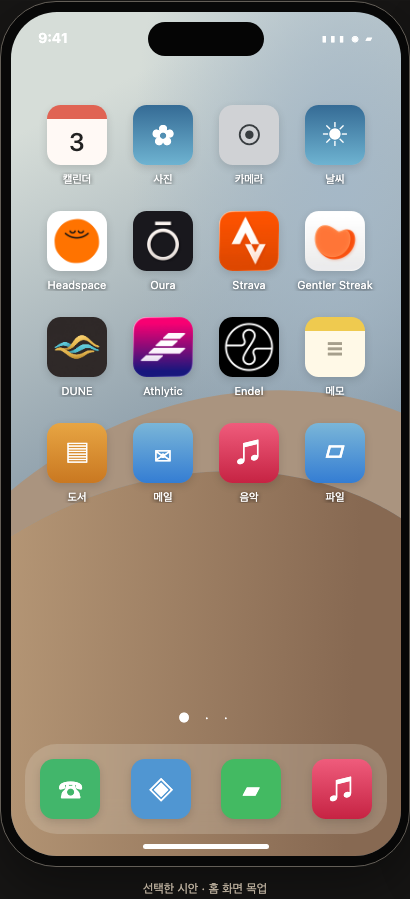

<!doctype html><html lang="ko"><meta charset="utf-8"><meta name="viewport" content="width=device-width,initial-scale=1"><title>홈 화면에서 보는9개</title><style>*{box-sizing:border-box}body{margin:0;padding:32px;background:#1c1917;color:#f7f0e5;font-family:-apple-system,BlinkMacSystemFont,sans-serif}h1{font-size:34px;letter-spacing:-1px;margin:10px 0}header p{font-size:16px;line-height:1.6;color:#c6b59d;margin:10px 0 24px}.eyebrow{font-size:12px;letter-spacing:.16em;color:#e1b453}main{display:grid;grid-template-columns:repeat(3,minmax(0,1fr));gap:24px}article{min-width:0}.art{width:100%;display:block;border-radius:23%}h2{font-size:18px;letter-spacing:-.5px;margin:12px 0 6px;line-height:1.4}b{color:#f5d778;margin-right:8px}.caption{font-size:13px;line-height:1.5;color:#c6b59d;margin:0}.micro{display:flex;gap:12px;align-items:end;margin-top:12px}.micro figure{margin:0}.micro img{display:block;border-radius:23%}.micro figcaption{font-size:10px;color:#b3a28b;margin-top:4px}footer{font-size:12px;line-height:1.6;color:#b3a28b;margin-top:28px}.home-art{width:100%;display:block}.swatches{display:flex;gap:7px;align-items:center;color:#c6b59d;font-size:12px;margin-bottom:22px}.swatches i{width:20px;height:20px;display:inline-block;border-radius:50%}.pair{display:grid;grid-template-columns:1fr 1fr;gap:16px}.pair article{padding-bottom:24px}.pair h2{font-size:17px}section h2{margin:0 0 12px;font-size:22px}</style><header><div class="eyebrow">DUNE / TWO COLOR TEST / V6</div><h1>홈 화면에서 보는9개</h1><p>DUNE은 세 번째 줄 첫 번째 · 같은60px · 같은 배경</p><div class="swatches"><i style="background:#e1b453"></i><i style="background:#4fc3d5"></i><i style="background:#302b2a;border:1px solid #6a5c4b"></i>골드 + 시안 / 차콜 배경</div></header><main><article><h2><b>86 → 104</b>네거티브 플로 · 정돈</h2></article><article><h2><b>87 → 105</b>네거티브 플로 · 레이어</h2></article><article><h2><b>84 → 106</b>브리지 갭 · 오프셋</h2></article><article><h2><b>81 → 107</b>인터리브 · 레이어</h2></article><article><h2><b>82 → 108</b>인터리브 · 볼드</h2></article><article><h2><b>80 → 109</b>인터리브 · 정돈</h2></article><article><h2><b>75 → 110</b>아이스 레이어 · 레이어</h2></article><article><h2><b>74 → 111</b>아이스 레이어 · 정돈</h2></article><article><h2><b>71 → 112</b>오션 글라스 · 정돈</h2></article></main><footer>2026.11.03 · 요청 순서86·87·84·81·82·80·75·74·71 · AI 색상 편집 시안<br>출발 시안의 형태 보존을 목표로 편집 · 픽셀 단위 기하 일치는 보장하지 않음<br>홈 화면은 HTML 목업 · 실제 iPhone 설치 캡처 아님 · 최종안 미확정</footer></html>